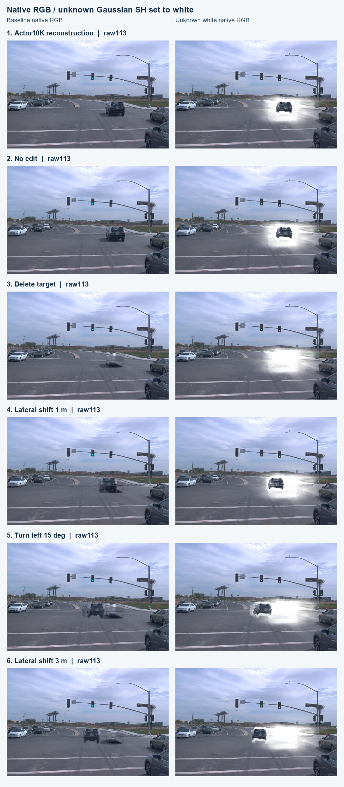

V43 同帧 unknown 白材质 GPU 交付
完整交付：204/204 个 group/frame。无新增训练；本次工作为诊断适配。
原生渲染耗时：197.896 秒。基准 RGB 与原保存图逐像素一致；所有已交付帧的 alpha、radii、depth、辅助特征及非颜色输入通过原生一致性检查。
改动与检查
只把 unknown 高斯的 SH 材质设为白色：DC=(1−0.5)/C0，高阶系数清零。known 高斯保留原生颜色。Actor 行按当前物理编辑变换；static unknown 保留该时刻原生位置，不随车辆搬动。几何、尺度、opacity、行顺序、遮挡和原生环境保持本组基准值，像素贡献由 CUDA 原生光栅器重新计算。
5px / 0.2 归属来自冻结 Actor10K 原观测语义/轮廓证据与同帧 R2 static 集合。它没有新增训练，也没有证明分类召回、精度或背景补全改善。白色材质仍受原透明合成影响，相关像素不保证纯白。
| 组（打开交互页） | 已核验帧 | raw范围 | raw113 unknown 行：static / actor |
|---|
| 10K 重建 | 49 | 077–125 | 15,333 / 3,576 |
| 无编辑 | 31 | 086–116 | 15,333 / 3,576 |
| 删除目标车 | 31 | 086–116 | 15,333 / 0 |
| 横移 1 m | 31 | 086–116 | 15,333 / 3,576 |
| 左转 15° | 31 | 086–116 | 15,333 / 3,576 |
| 横移 3 m | 31 | 086–116 | 15,333 / 3,576 |
raw113 同帧成对排图
左为本组原生 RGB，右为 unknown 白材质原生 RGB。12 张原图按480×320原尺寸粘贴，标题在图像区域之外；保存后已逐像素检查排图没有修改原图。

适配边界与验收
1K、5K 仍需各自 checkpoint 的贡献归因；V1 原生通路使用不同动态行命名空间，需要独立适配。场景2/3尚未迁移到本次继承 R2 与白材质交付。
人工结论：未提供人工验收结论。
数据来源：真实已发布 manifest · 结构化摘要。本报告从现有真实证据生成，不重新执行渲染或推断人类验收。
交互工作台：C:/Users/dengyunlong/Documents/Codex/2026-10-22/ni-x-a/outputs/GS_Scene_Diagnostics_20261027/index.html；本Git归档提供原尺寸配对图和审计清单，完整原生资产位于本地工作台与远端现场。